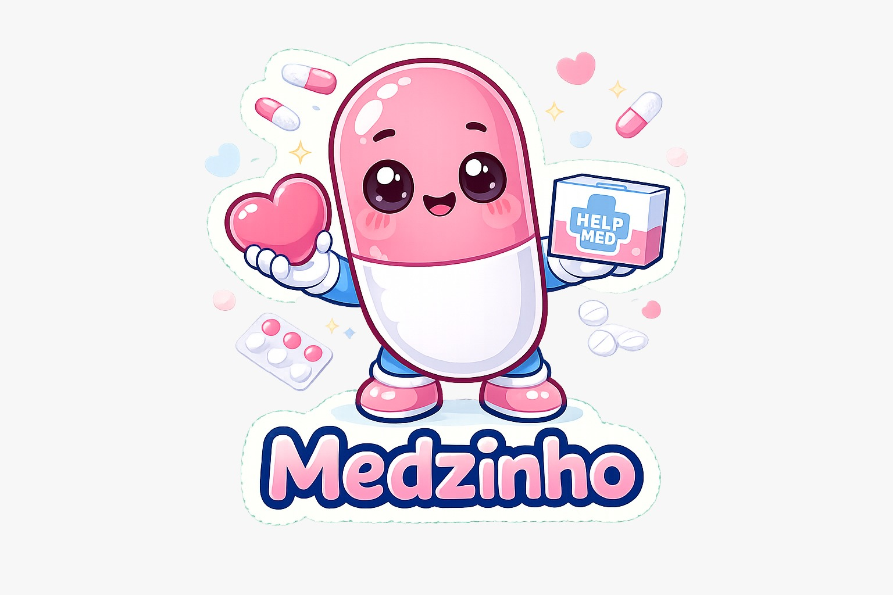

Somos uma associação sem fins lucrativos dedicada à arrecadação, triagem e distribuição responsável de medicamentos para pessoas em situação de vulnerabilidade social.

Medicamentos arrecadados para quem mais precisa.
Conectando pessoas através do cuidado e da empatia.
Triagem responsável e distribuição com qualidade.
Reduzindo o desperdício e preservando o meio ambiente.
Todos os anos milhares de medicamentos dentro da validade são descartados, enquanto milhares de brasileiros interrompem seus tratamentos por falta de acesso.
A Help Med CWB nasceu para conectar essas duas realidades de forma segura, ética e responsável, promovendo o reaproveitamento consciente de medicamentos e ampliando o acesso à saúde para pessoas em situação de vulnerabilidade social.
Promover o acesso à saúde por meio da arrecadação, triagem e redistribuição responsável de medicamentos, garantindo segurança, qualidade e dignidade às pessoas em vulnerabilidade socioeconômica.
Beneficiar o maior número possível de pessoas por meio do reaproveitamento seguro de medicamentos, reduzindo o desperdício e contribuindo para um Brasil mais justo, sustentável e solidário.
Ajudar quem mais precisa com empatia, acolhimento e responsabilidade social.
Clareza em todas as etapas da arrecadação, triagem e distribuição.
Atuação baseada em princípios éticos e responsabilidade com a sociedade.
Redução do desperdício de medicamentos e preservação ambiental.
Controle rigoroso da validade, armazenamento e integridade dos medicamentos.
Respeito à dignidade humana e acesso justo aos tratamentos.
Fortalecimento de parcerias entre sociedade, instituições e profissionais.
Trabalhar diariamente para ampliar o acesso à saúde e melhorar vidas.
Garantir que todos os medicamentos recebidos passem por critérios rigorosos de triagem.
Expandir o atendimento para beneficiar cada vez mais famílias em situação de vulnerabilidade.
Fortalecer a cooperação com farmácias, universidades, clínicas e instituições públicas.
Promover campanhas educativas sobre descarte correto e doação de medicamentos.
Atuar com transparência, ética e prestação de contas à sociedade.
Seguir integralmente as normas da ANVISA e demais legislações sanitárias.
Desenvolver soluções digitais para cadastro, estoque e rastreabilidade dos medicamentos.
Expandir as ações da Help Med CWB mantendo qualidade, segurança e responsabilidade.
Um medicamento que não será mais utilizado por você pode representar
esperança para outra pessoa.
Doe, compartilhe esta iniciativa e ajude a transformar vidas.